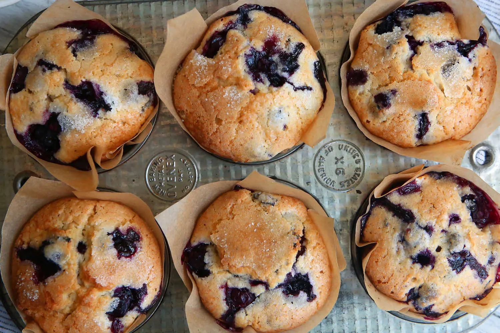
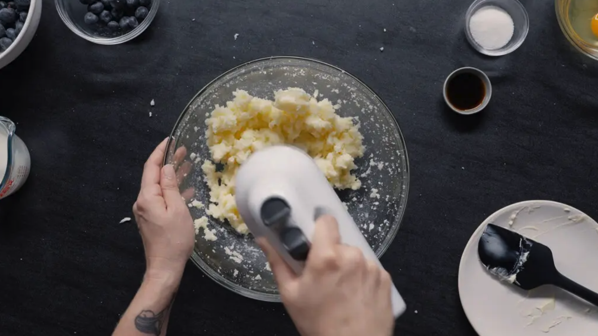
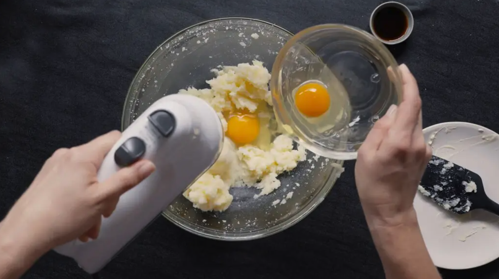
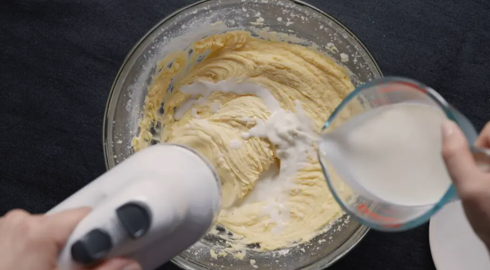
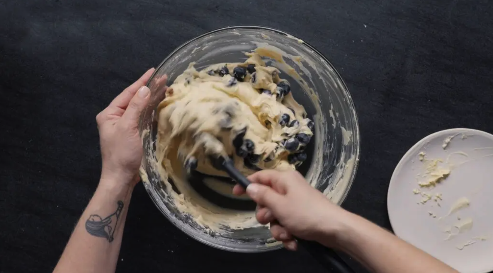
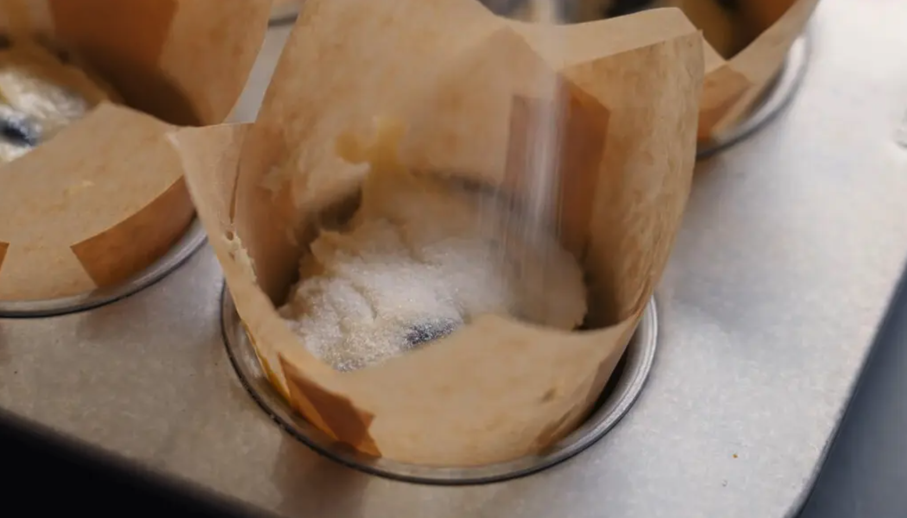

Jordan Marsh's Blueberry Muffins
Prep Time: 10 minutes
Baking Time: 30 minutes
In 1985, The Times published a recipe for the blueberry muffins served at the Ritz-Carlton hotel in Boston, which Marian Burros, who adapted the recipe, judged among her favorite muffins in the city. A few years later, a reader wrote Marian to say that the best blueberry muffins in Boston were in fact from the now-closed Jordan Marsh department store. Marian tracked down and adapted that recipe so you can judge for yourself. But the origins of the Jordan Marsh recipe were unclear until 2023, when Mara Richmond of Burlington, Vt., wrote The Times to say that the developer of the recipe was her father, Arnold Gitlin, then the executive food consultant for Allied Stores, which owned Jordan Marsh at the time. His recipe, Richmond said, was an adaptation from one in Esther Howland’s 1847 cookbook, “The New England Economical Housekeeper, and Family Receipt Book.” Everything old is new again. This version has a lot more sugar and butter and fewer eggs than the Ritz-Carlton muffins. It also calls for mashing a half cup of berries and adding them to the batter. This produces a very moist muffin, one that will stay fresh longer.
Can you make this recipe?
Equipment
- Hand Mixer or Whisk
- Medium and Large Bowls
- Flexible Spatula
- Teaspoon and Tablespoon Measures
- Measuring Cups
- Muffin Tin
- Muffin Liners
Ingredients
- ½ cup softened butter
- 1¼ cups sugar
- 2 eggs
- 1 teaspoon vanilla extract
- 2 cups flour
- ½ teaspoon salt
- 2 teaspoons baking powder
- ½ cup milk
- 2 cups blueberries, washed, drained and picked over
- 3 teaspoons sugar

Instructions
Step 1
Preheat the oven to 375.
Step 2
Cream the butter and sugar until light.

Step 3
Add the eggs, one at a time, beating well after each addition. Add vanilla.

Step 4
Sift together the flour, salt and baking powder, and add to the creamed mixture alternately with the milk.

Step 5
Crush ½ cup blueberries with a fork, and mix into the batter. Fold in the remaining whole berries.

Step 6
Line a 12 cup standard muffin tin with cupcake liners, and fill with batter. Sprinkle the 3 teaspoons sugar over the tops of the muffins, and bake at 375 degrees for about 30-35 minutes.

Step 7
Remove muffins from tin and cool at least 30 minutes. Store, uncovered, or the muffins will be too moist the second day, if they last that long.
Recipe References
-
NYT Cooking
-
I like this website because I feel like it is very clean and organized -- the recipe format on the main page is consistent which makes it easy to peruse. It also uses visual hierarchy to draw attention to special recipes depending on close holidays or recent trends.
-
Alison Roman
-
I like this website because I think that the images add a lot to the website - they are very high quality and colorful, which draws attention to each individual card. The organization of main ingredient or occasion is also helpful.
-
Bon Appetit
-
I think this website is similar to the NYT site, but this is more vertical than NYT, which I would consider more horizontal. I like that it uses varying image size to organize content as well as tags to identify the type of recipe (healthy, fast, etc.).
Non-Recipe References
-
Pinterest
-
This website is obviously very well known for aesthetics but I think that it packs a lot of communication in a small interface. The icons and imagery allows functionality to be very smooth and subconscious for users.
-
I Miss My Cafe
-
There's not a lot to communicate here but I think that it is very simple while at the same time functional. Because it is used as a background noise generator, it is very helpful that the controls are so lowkey and straightfoward, which allows identifying and using what you need fast.
-
Nakashima Woodworkers
-
This website is very elegant and simple - it draws attention to the images, which are the focus of the website and what users are looking for. The orgainzation is very intuitive and what you want to find is where you expect it to be.